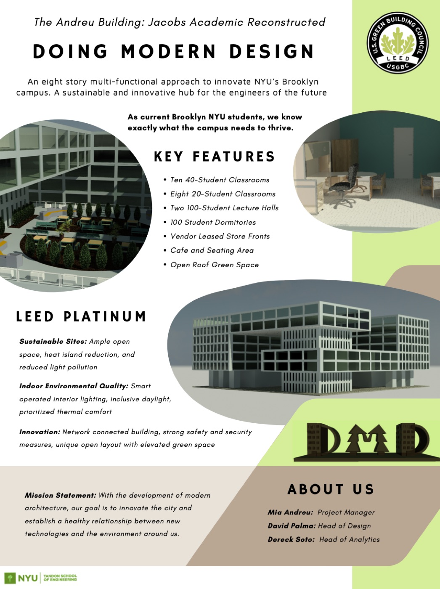

The Andreu Building: Jacobs Hall rebuilt as a LEED Platinum campus hub
As project manager, I led a team of three in redesigning NYU's Jacobs building in Revit. The goal was to show that a LEED Platinum building doesn't need a billion-dollar budget.
- Station
- NYC NYU Tandon
- Role
- Project manager, Doing Modern Design
- Team
- 3 students
- Tool
- Autodesk Revit
- UN goal
- SDG 11, Sustainable Cities and Communities; SDG 4, Quality Education
- When
- Fall 2023
- Budget
- $28M, 8 stories
- Result
- First Place, Nick Russo Award

Overview
Our team, Doing Modern Design, reimagined NYU's Jacobs building as a sustainable, technology-forward campus facility. The mission was a healthy relationship between technology and the environment, at a realistic price.
In Autodesk Revit, we designed a complete reconstruction targeting LEED Platinum: eight stories with 100 dorms, 18 classrooms, full MEP systems, and rooftop green space. Every decision weighed environmental performance, occupant wellness, and cost.
The team
The brief we set
Rebuild the Jacobs building as a sustainable campus hub that combines green building strategies, smart technology, and community space, reaches LEED Platinum, and stays within a realistic budget.
Six systems behind the rating
- Solar heat gain windows
- High-performance glazing cuts cooling loads while letting daylight deep into every floor.
- Smart LED lighting
- Occupancy-sensing fixtures adapt to use and reduce energy on every floor.
- Rainwater reuse
- Collected, filtered rainwater feeds irrigation and non-potable building use.
- Heat island reduction
- A green roof and high-albedo materials lower surrounding temperatures.
- Integrated security
- Access control and monitoring built into the building's smart infrastructure.
- Low-emission commuting
- Bike storage, EV charging, and proximity to transit.
A building people use
Beyond LEED, we wanted a campus destination. The ground floor has a vendor leasing area and a café to bring life to the street. The upper floors add open collaborative space and green-space technology that brings nature indoors.

What it costs
The Andreu Building comes in at $28 million. NYU's John A. Paulson Center, a comparable campus building, cost $1.2 billion.
We didn't cut corners. We made smarter choices: passive strategies like solar heat gain management, long-life materials, and systems that lower operating cost over the building's life.
What I learned
- How to manage scope, timeline, and roles as project manager on a technical design
- The real tradeoffs between sustainability features and budget
- How to use Revit for architectural modeling, MEP coordination, and visualization
- That LEED is a framework for systematic decision-making, not a checklist
- How to present technical work to non-technical stakeholders
Treat LEED Platinum as a design constraint, not an add-on, and a high-performance building can also be affordable and pleasant to use.